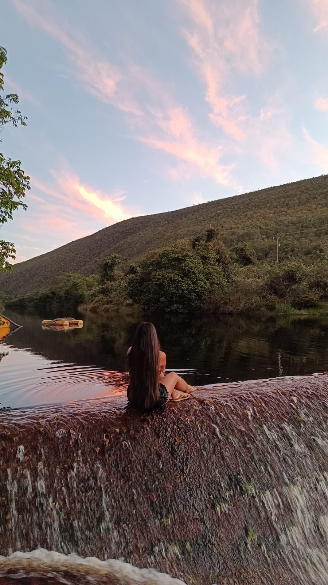

Sobre Mim
Oi! Eu sou a Jenyffer. Sou alguém que valoriza os momentos de calmaria e as coisas simples da vida.
Para mim, não tem nada melhor do que mergulhar nas páginas de um bom livro para viajar sem sair do lugar. Mas, quando preciso desconectar de verdade da correria do dia a dia, meu destino certo é a estrada. Amo viajar e buscar lugares onde eu possa me conectar diretamente com a natureza. Estar perto do verde, respirar ar puro e sentir o ritmo do mundo desacelerar é o que me recarrega e me faz sentir verdadeiramente leve.
O que me faz bem
- Perder a noção do tempo dentro de uma boa leitura.
- Pegar a estrada e explorar novos cantos do mundo.
- Sair para jogar com os amigos, dar risadas e renovar as energias.
- Desacelerar a rotina e viver de forma mais leve.